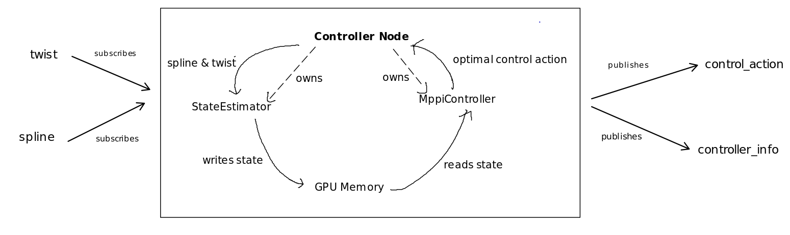

Controller Overview
If you’re unfamiliar with ROS2, check out https://docs.ros.org/en/humble/Tutorials.html.
The controller hinges on 3 things:
A novel state estimation pipeline.
Our state of the art implementation of the MPPI algorithm.
An efficient dynamics model that is used for both state estimation and MPPI.
This is implemented in two objects that the node owns - the StateEstimator and the MppiController.
They provide the following functionality:
StateEstimator: given twist and spline, estimates inertial state and a inertial to curvilinear lookup table.
MPPIController: given inertial state and the lookup table, calculates the optimal control action to take.
The inertial state and curvilinear lookup table are shared through GPU global memory.
This diagram shows this relationship:
Implementation
As for the node itself, these are the implementation details:
Initialization: Construction creates subscribers and publishers, then launches MPPI in a new thread.
Callbacks
Spline: Updates the state estimator with the most recent set of spline points. Notifies MPPI thread that the state is dirty.
Twist: Updates the state estimator with the most recent twist. Notifies MPPI thread that the state is dirty.
These callbacks are mutually exclusive.
MPPI Thread: Loops continuously. Waits to be notified that state is dirty (i.e. new incoming message). When notified, does state estimation, then runs MPPI. Publishes the control action and controller info.
Class reference can be found in Class ControllerNode.
Code for the node can be found in controls/src/nodes/controller.cpp.